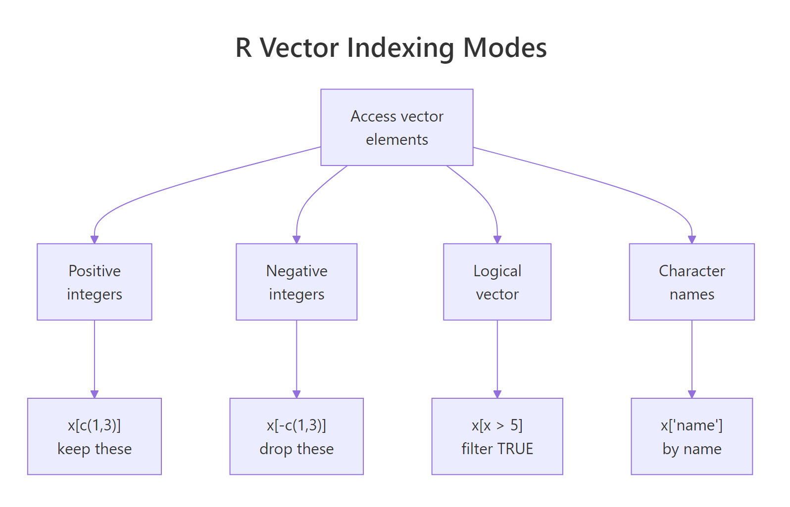
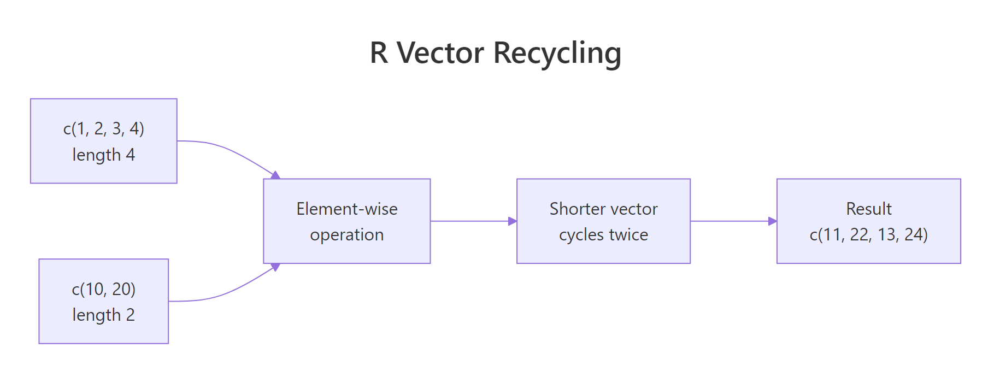

R Vectors: The Foundation of Everything in R (Master This First)
A vector in R is an ordered sequence of values of the same type — it's the atomic building block that every data frame, column, and statistical function is built on. Master vectors and the rest of R snaps into place.
What is an R vector and how do you create one?
Here's the secret nobody tells beginners: in R, a single number is already a vector (of length 1). There are no "scalars." Once you understand this, vectorized operations, recycling, and indexing all make sense. Let's build one and run a few summary functions on it.
The c() function ("combine") is how you build vectors from individual values. It's probably the function you'll type most often in your R career. Notice that mean(), sum(), and length() all operate on the whole vector at once — no loop needed. That's vectorization, and it's R's superpower.
c stands for "combine" or "concatenate," not "create." You can pass it existing vectors too: c(prices, 99.99) appends a value and returns a new vector of length 6.Try it: Create a character vector of three city names and print its length.
Click to reveal solution
c() takes any number of arguments and glues them into a vector — here, three strings, so the result is a character vector of length 3. length() reports element count, not character count, which is why it returns 3 and not the total number of letters.
How does R decide a vector's type?
A vector can only hold one type at a time — all numeric, all character, all logical, and so on. What happens if you mix types? R silently coerces every element to the most flexible type in the group. This rule trips up beginners constantly, so let's see it in action.
Watch the third example carefully. The number 1 and 3 got converted to the strings "1" and "3" because character is the most flexible type. This is called implicit coercion — R does it without warning you. It's convenient, but it can silently break calculations if a stray string sneaks into a numeric column.
mean() suddenly returns NA with a warning about "argument is not numeric," the first thing to check is typeof() on the vector. A single character value will coerce the entire vector to character and break every numeric function.Try it: Predict what typeof(c(FALSE, 2L)) returns, then run it.
Click to reveal solution
The coercion hierarchy is logical < integer < double < character, so when a logical meets an integer, R upgrades the logical to integer (FALSE → 0L) and returns an integer vector. If you added a double literal like 2 instead of 2L, the result would move one step up the hierarchy to "double".
How do you index vectors with [?
Indexing — pulling out specific elements — is where R gets powerful. R offers four different ways to index a vector, and each is useful in different situations. The diagram below shows them side by side; we'll work through each one in code.

Figure 1: Positive integers select elements, negative integers exclude them, logical vectors filter by condition, and named indexing pulls by label.
First, positive integer indexing. You pass the positions you want inside [. R uses one-based indexing, so the first element is prices[1], not prices[0].
Next, negative integer indexing says "give me everything except these positions." This is the fastest way to drop an element you don't want.
Logical indexing is where vectorization pays off. You write a condition that produces a logical vector, then use it to filter. This is how you'll do almost all your real-world subsetting.
Finally, named indexing. If you give your vector element names, you can pull values by label — a cleaner, more self-documenting style.
filter(), subset(), and conditional operation you'll ever write in R. If x[x > 0] feels obvious, you've internalized the single most important R idiom.Try it: From prices, select only the values greater than or equal to 15.25 using logical indexing.
Click to reveal solution
ex_prices >= 15.25 evaluates to a length-5 logical vector, and using it inside [ keeps only the positions where it's TRUE. Three values meet the cutoff outright and the trailing 15.25 is kept because >= is inclusive — swap it for > and you'd lose that element.
How do vectorized operations work?
In most languages, if you want to add 10 to every element of a list, you write a loop. In R, you just write x + 10. R applies arithmetic element-by-element across the entire vector. This isn't just shorter — it's typically 10 to 100 times faster than a loop because the work happens in compiled C code under the hood.
Every arithmetic operator (+, -, *, /, ^), every comparison (>, <, ==, !=), and nearly every math function (sqrt, log, abs, exp) is vectorized. You'll almost never need an explicit for loop in idiomatic R.
Try it: Scale temps_c to a 0-to-1 range using (x - min(x)) / (max(x) - min(x)).
Click to reveal solution
min(ex_temps) is 15 and max(ex_temps) is 30, so the denominator is 15. Each element gets recentred to 0-based distances (3, 7, 0, 12, 15) and divided element-wise by 15 — min-max scaling in one vectorised line with no loop.
What is recycling and when does it bite?
Here's what happens when you combine two vectors of different lengths: R silently repeats ("recycles") the shorter one until it matches the longer one. This is extremely convenient — but it can also cause silent bugs when you didn't mean to recycle.

Figure 2: When lengths don't match, R repeats the shorter vector from the beginning. No warning if the longer length is a multiple of the shorter.
Let's see the friendly case first.
The shorter vector c(10, 20) was recycled three times to match x's length of 6. No warning — because 6 is a clean multiple of 2. Now the messy case:
R still gives you a result, but with a warning. It recycled c(10, 20, 30, 40) partially to fill the last two slots — almost certainly not what you wanted.
x + 1 works: the scalar 1 is a length-1 vector that gets recycled to match x. Every "add a constant" operation in R is really a recycled vector addition.Try it: Predict the output of c(1, 2, 3, 4) * c(10, 100), then run it.
Click to reveal solution
The length-2 vector c(10, 100) recycles twice to become c(10, 100, 10, 100) and is then multiplied element-wise against c(1, 2, 3, 4). Because the longer length (4) is a clean multiple of the shorter length (2), R does the recycling silently — no warning.
How do you create sequences and repeat vectors?
Typing out long vectors by hand is painful. R gives you three tools to generate them: the : operator for integer ranges, seq() for custom spacing, and rep() for repetition. These three cover 95% of the "I need a vector of N things" cases.
Notice the difference between times and each in rep() — times repeats the whole vector, while each repeats each element in place. You'll use each constantly when building factors for grouped analyses.
seq_len(n) over 1:n when n might be zero. If n = 0, 1:n gives you c(1, 0) (a gotcha), but seq_len(0) correctly returns an empty integer vector.Try it: Use seq() to make 7 evenly-spaced numbers between -1 and 1.
Click to reveal solution
length.out = 7 tells seq() how many points you want and lets it compute the spacing — here 2 / 6 ≈ 0.333. Use length.out when you care about the count (plotting grids, bins), and by = when you care about the step size.
How do you modify vectors in place?
You can update any element — or a whole slice — by assigning into an index. The same four indexing modes from earlier all work on the left-hand side of <-.
Three things worth noting. First, logical-index assignment (grades[grades < 80] <- 80) is a one-line way to floor values — no loop needed. Second, assigning past the end of a vector automatically grows it. Third, R makes a copy under the hood on most modifications, so there's no "aliasing" issue like you'd see in Python lists.
Try it: Set all negative values in v to zero using logical-index assignment.
Click to reveal solution
Putting the logical expression on the left of <- targets only the positions where it's TRUE, and the scalar 0 is recycled into each selected slot. That's the idiomatic way to floor values — no loop, no ifelse, just a single assignment.
Practice Exercises
Three capstones that combine everything above.
Exercise 1: Grade curve
You have 10 exam scores. Students below 60 get curved up to 60. Students at or above 90 get a 5-point bonus (capped at 100). Everyone else stays the same.
Show solution
Exercise 2: Temperature outliers
Given hourly temperatures for a day, return the hours (1-24) more than one standard deviation from the mean.
Show solution
Exercise 3: Discounted prices with recycling
You have 8 product prices. Apply a repeating discount pattern of 10%, 15%, 20%, 25% and return the final prices.
Show solution
Putting It All Together
A realistic workflow: a month of daily sales. Find which days beat the average, flag slow days, and report summary stats — all without a single loop.
We named each element (d1, d2, ...), used logical indexing to filter strong days, then combined a logical vector with positional indexing on day to pick out slow days. Every step is a single vectorized expression.
Summary
| Concept | Key idea |
|---|---|
| Create | c(1, 2, 3) combines values; scalars are length-1 vectors |
| Type rule | All elements share one type; mixing coerces to the most flexible type |
| Indexing | Positive, negative, logical, and named — all use [ |
| Vectorization | Operators and functions apply element-wise, fast and loop-free |
| Recycling | Shorter vector repeats to match the longer one; warns if not a clean multiple |
| Sequences | 1:n, seq(), and rep() generate structured vectors |
| In-place update | Assign into any index or slice; vectors grow if you write past the end |
References
- R Language Definition — Vectors — official documentation on vector types and storage.
- An Introduction to R — Simple manipulations — the canonical introduction to vectors.
- Advanced R — Subsetting by Hadley Wickham — deep dive on
[,[[, and$. - R for Data Science — practical vector workflows for data analysis.
- R Inferno — Growing objects by Patrick Burns — the classic warning about growing vectors in loops.
Continue Learning
- R Data Types: Which Type Is Your Variable? — understand the six types that vectors can hold and when R coerces between them.
- R Operators: Arithmetic, Logical, and Comparison — the operators that work vectorially across vectors.
- R Control Flow: if, else, and switch — learn when you still need explicit logic and when vectorization replaces it.